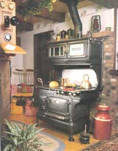
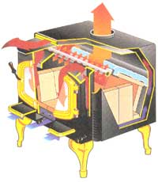
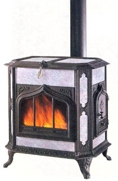
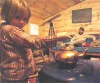
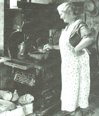
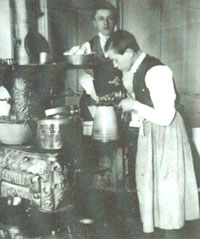
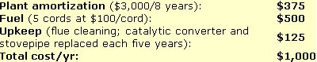

MOTHER'S 1993
The new lowdown on a familiar subject; our craggy contributor from New England revels in the past and tells us what's
important for the present.
If you're like me, you've been heating and cooking with wood long enough that you don’t want another lecture about the cozy charm of a wood fire, the money you can save over electric heat, why to clean your flue or how to stack a cord of wood. What you may want to know, however, is why you cant get an efficient, new wood stove anymore without paying hundreds of dollars extra for a government-approved catalytic smoke combuster or “Hi-Tech” stove; how the wood smoke that we once considered benign can degrade our air quality, endangering health and property; and how the new government presence in home in home heating affects your use or sale of the "low-tech" INTREPID, KODIAK or ASHLEY airtight wood stove (or the faithful old coal-burner) that has warmed you for years.
In a sense, what went around is coming around again. Ben Franklin invented wood stoves to increase efficiency of fuel-gobbling, radiant-heating, colonial fireplaces when coastal U.S. forests were being cut out and fuel costs were rising in the first "energy crisis." The first Franklin Fireplace enclosed a smaller fire in an open iron box with a smaller draft outlet, both conserving fuel and creating convection currents that distributed more heat through the room. It was later fitted with doors to increase efficiency even more.
During the 19th Century, Franklin's idea was elaborated into wood- and coal-burning stoves in a thousand designs: potbellies, parlor heaters, columnar stoves, and cook ranges. They were made of cast iron, sheet metal, and channel-iron-framed soapstone-many adorned with nickel-plated foot rests, handles, and ornamentation. As fuel had to be hauled ever-greater distances at ever-greater cost, stoves were designed to be ever more efficient, employing multiple draft controls, serpentine smoke channels, and long runs of stove pipe to extract the last bit of heat from a chunk of fuel. And airtight stoves are nothing new: in some parlor-heaters from the late 1800s, doors and draft outlets were milled to fit as snugly as any on a modern gasketed stove.
With the introduction of kerosene (coal-oil) space heaters, then oil and gas central furnaces, and finally the all-electric home, dirty and labor-intensive solid fuels fell into disfavor. Wood and coal stoves were relegated to vacation camps and back-country homesteads ... till the OPEC-cartel-generated "oil crunch" of the '70s rekindled interest in domestic energy sources and cheaper fuel of any kind.
At the same time, a newfound environmental awareness emphasized renewable energy, wood became the politically correct fuel, and the stove-making industry rose from its 19th Century ashes. With heating oil prices climbing steadily, anything that would hold a wood fire was put into daily use by eager woodburning novices: rusting antiques hauled out from behind the barn, stoves cobbled up from boiler plate by backyard welders, tiny green-enameled cast iron box stoves from Scandinavia touted as "whole-house heaters," leaky log-burners and flimsy ornamental potbellies made by scrap-iron foundries in the Far East.
Beyond the cozy charm of a wood stove lies the practicality of an increasingly
needed heating source.
First-generation modern, airtight wood stoves were little but well-sealed boxes.
It wasn't long till the poorly welded steel plate, thin iron castings, and over-fired antiques warped or cracked, and those pretty, green box-heaters proved too small to heat a large, leaky American room, say nothing of a whole house.
But the wood-energy economy matured quickly. New homes were built to be as airtight and energy-efficient as the stoves that heated them, and older homes were caulked and weather sealed. A rash of wood-stove-caused house fires and a plague of cord-wood scalpers (countrymen coming in to bilk the city folks for a change) prompted states to tighten stove-installation regulations and legislate that an honest cord had to contain 128 cubic feet of wood. Self-taught stovewrights began reconditioning antiques to look and work as good as new. And the new-stove manufacturing industry responded to growing demand with bigger, better-built, more attractive, and more fuel-efficient stove designs.
But, with the new popularity of wood burners came new problems. First-generation modern, airtight wood stoves were little but well-sealed boxes. In their most fuel-efficient mode, the gasketed door was shut tight and draft controls opened just enough to supply sufficient oxygen to keep wood smoldering for a long, relatively cold-and very smoky-burn. Some barely attained 50 percent efficiency, meaning that almost half the energy in the fuel was lost evaporating the wood's normal 20 percent moisture content and carrying thick, wet smoke up the chimney. Some of the water vapor and smoke solids condensed into black, sticky creosote that leaked from ill-fitting stovepipes and dried out in flues to threaten chimney fires. But most of it exited to contaminate the air.
The wood-smoke haze that lingers in areas of active air flow, such as my own New England hills, proved to accumulate like any smog does in Los Angeles-type inversion bowls and in river valleys, ocean coves, and stagnant-air zones. These areas include: Vail, Colorado; Portland, Oregon; and the towns and cities in the Connecticut River valley of Central New England. There the carbon dioxide and acidic, unburned hydrocarbons that are in smoke distilled from hundreds of oxygen-starved overnight fires, settles with the morning dew. This not only corrodes paint on cars and homes, but also burns trees and garden plants, and encourages human heart, lung, and nervous-system disorders. Many cities had to impose a ban on wood fires when conditions were right for wood smog.
The environmentalist/public-interest lobby responded with a vigorous series of lawsuits that spurred the Federal Environmental Protection Agency to impose nationwide wood-smoke limits. These were based on Federal air quality standard PM10, which limits the amount of under- 10-micron particulates in our air.
Effective July 1, 1988, the EPA-unbeknownst to wood-burning consumers, with ineffective opposition from a fragmented stove-making industry, and encouraged by the Fortune-500 promoters of a new glass-honeycomb smoke combuster-promulgated a two-phase program to limit smoke emitted by stoves made or sold in the U.S.A. Colorado and other states experiencing wood smog problems issued parallel legislation. (Oregon added wood-burning efficiency standards as well.)
Wood smoke, particularly from an oxygen-starved fire, contains a whole catalog of noxious chemicals. But EPA measures only "particulates"-miniscule (10-micron and smaller) specks of partly-burned hydrocarbon that lodge deep in the lungs, and that are found in smoke from even the hottest, cleanest wood fire-assuming that other less easily measured smoke toxins will be reduced along with particulates.
We are now into Phase 2 of the EPA program affecting new draft-restricting heating stoves made after July 1, 1990 or sold after July 1, 1991. Freestanding and fireplace-insert airtight stoves are covered, while cook ranges and fireplaces-lacking doors and dampers to operate in airtight mode-are exempt, whether built-in or freestanding. Smoke from stoves without a catalytic combuster is limited to 7.5 grams/hr. of particulates and catalytics to 4.1 grams/hr. By July of '92, all stoves meeting the 1988 Phase 1 standard (5.5 grams/hr. for catalytic stoves and 8.5 gr/hr. for non-catalytics) had to be gone from retail stores even if unsold.
This year ('92), cast-iron log-burners and Franklines in pre-airtight designs (with sloppy-fitting doors and leaky air controls) have been exempted from EPA regulation and are beginning to appear in stores at pre-airtight prices. Suitable for occasional use in workshops or rural camps, they are dirty-burning, inefficient, and once again are being flimsily made in offshore foundries. Don't use them for serious home-heating in populated areas.
With a combination of sincere environmental responsibility and a practical "if you can't beat 'em, join 'em" resignation, solid fuel industries fell in line with the new regulations. To date, four technologies have been introduced in response to the new standards. Best-known are the catalytic stoves.
Warming up some tea on top of an old wood-burning stove is one of the coziest ways to start a winter morning.
Once it was certain that the EPA standards would become law, the stove industry committed millions to redesign their airtights around the catalytic smoke combuster, a device that works on the same principle as an auto-exhaust converter: Stove emissions pass through a glass/ceramic honeycomb coated with a rare-metal catalyst that forms a fleeting chemical bond with smoke particles to lower their combustion temperature. Inside the combuster, they burn up, increasing fuel efficiency by a quarter to a third. While an old-style 50 percent-efficient stove can spew hundreds of pounds of toxic crud into the air over a heating season, top-performing catalytics exceed 80 percent efficiency and produce less than one gram/hr. of particulates.
But in wood heat as in all else, you don't get something for nothing. Air-dried cordwood is about 20 percent water, which hot-burning conventional stoves evaporate and send up and out the flue. But with the colder-burning catalytics, the smoke is so cold that the water in it can condense before it exits the flue- to run out in black puddles over the cellar floor or freeze and break out the bottom of an exterior chimney. Also, the top-or rear-mounted combuster cell and its bulky housing limit design flexibility, so catalytics are blocky. Gone from the new stove shops are cylindrical railroad stoves, antique reproductions or long, angular log burners. Plus, catalytics are expensive.
Once, you could buy a mediocre-quality but workable Taiwanese copy of most any popular stove design for no more than $250. Now, you'll pay a minimum of $700 to over twice that for a catalytic; the EPA estimates that clean air adds $150 to $200 to the price. EPA testing, performed at five accredited labs across the nation, costs $4,000 to $5,000 (and up if re-testing is needed) per stove model and recertification is required every five years-which is affordable only for well-capitalized firms with a capable design staff, a solid product line, modern plant, and an effective marketing program. The number of manufacturers is down from 300 in the early '80s to about 100 firms producing some 400 EPA-certified models today. Among these are several long-established European stove manufacturers, but the Far Eastern makers of "toilets," as the trade refers to the cheap imports, are out of the business. So is their once-formidable downward influence on prices.
The diet of catalytics is restricted to wood-and nothing else. Just as a car's converter would be ruined by leaded gas, a wood-smoke combuster can be ruined if exposed to chemicals from coal, painted or treated wood, metals or plastics, and even some coated and colored papers. The EPA requires a full-replacement guarantee of two years on the combuster cell, and most manufacturers extend this on a "limited-warantee" basis to the cell's normal service life of five years or so. But the warrantee doesn't cover intentional damage from using your stove as a trash burner. A replacement cell costs $80 to $150.
Most discouraging perhaps, draft is restricted by the converter so that catalytic stoves perform at a technology-controlled pace. Starting up a fire with a cold flue can be troublesome, and catalytics burn wood deliberately-consuming about four loads of fuel in the time a non-catalytic would use six. So they produce correspondingly less heat than a conventional stove of the same size. Since the draft-restricting converter cannot be circumvented or legally removed for a quicker, hotter blaze, experienced woodburners installing a catalytic on the same scale as their familiar Mama Bear or Vigilant may find their homes cold and their stoves stubbornly unresponsive. "The thing is nothing but a damned appliance" says one owner of an early-model catalytic. "It won't heat or fire up like my old Wood Master." The manufacturers have improved catalytics' operating characteristics over the past five years, but many stove retailers are reluctant to sell an experienced woodburner a catalytic, and are recommending "high-tech" models.
The pelletised-fuel burner is beautifully engineered to burn an efficient and super-clean fuel.
After the first catalytic designs were met with a mixed reception, manufacturers sought to increase wood-stove efficiency and reduce emissions without a combuster . . . through pure design. The resulting "high-tech" stoves feature fireboxes lined with insulating firebrick to burn hotter and cleaner than their conventional predecessors. High-velocity, pre-heated air is drawn in through a hollow smoke shelf or vents at back and sides of the fire to fan the flame at critical secondary-combustion points, burning the smoke-but not as effectively as a combuster. High-techs emit two to three times the particulates and are 5 percent to 10 percent less fuel-efficient than a catalytic.
However, lacking a combuster and its housing, the high-techs are smaller and cheaper. And, as the draft can be opened for full air flow, they are nearly as responsive as their "low-tech" antecedents. Their main drawback is size; to date, high-techs satisfying emission restrictions have small fireboxes and limited heating capacity. And, they aren't cheap. At this writing, our local hardware stores are stocking little two-foot-square welded steel high-techs at a price of $350. Stove designers are working to increase high-techs' heating capacity with more elegantly-engineered oxygen flow, but electric fan-forced-draft may be necessary.
The third new innovation is the palletized burner that in less than a decade is claiming more than a third of annual sales in urban areas of California and the Pacific Northwest. It is also becoming the alternative heat source of choice for many all-electric home owners across the nation. The main advantage of these stoves is also their main disadvantage; they are beautifully engineered to burn an efficient and super-clean fuel-but one which is manufactured so must be purchased.
Though it takes a million-dollar plant, wood of any kind-including manufacturing waste usually sent to a dump or incinerated as well as logging slash and trash timber normally left to rot in the woods- can be ground, dried, and compressed into rabbit-feed size pellets of uniform size and density. The stove is highly automated, feeding in pellets with an electric auger and opening the forced-air draft when a thermostat tells it to. The fuel contains only five percent water to be boiled off, so creosote is non existent and fuel-efficiency approaches 80 percent-better than many oil burners. After start-up, the exhaust really can't be called smoke; after being burned twice and passing through a heat-exchanger, it is cool and clean enough to be fan-forced out through a little three-inch direct-vent pipe. Emissions of about one gram/hr are cleanest of any stove design. The only work needed is to dump fuel into the hopper once a day and clean out the ashtray every week or so.
Cost of a pellet stoves averages about $2,000 installed-expensive, but cheaper than a cordwood stove when you factor in cost and upkeep of the ceramic-lined or insulated metal chimney that the log stove needs and the pellet burner doesn't. You might question spending so much for a new wood stove when the fuel doesn't grow on trees, so to speak. But the wood-products industry has a whole lot of sawdust and wood chips to dispose of and will go to considerable effort to sell it rather than pay to dispose of it. They've sold a low volume of compressed-sawdust "Presto-Logs" to recreational fireplace owners for 50 years. But pellets are for serious heating and the potential sales volume warrants serious investment. For one, backyard-barbecue fuel king, Kingsford Charcoal, has just finished a multi-million dollar plant in Pennsylvania that will make pellets as widely available in the Northeast as they are in the Northwest. More plants are building and you may be sure that the wood-products industry will do its best to assure that pellet stoves are here to stay.
Houses were built around thermal-mass firestoves so there would be a heat-radiating wall in each room
Bulk pellets cost from $100 to $150/ton (a one to two month supply), depending on hauling distance, but even bagged fuel at about $3.50 per 40-lb. bag (a one to two day supply) compares favorably with cord-wood and beats fossil fuels sideways.
Clean, efficient and work-free they may be, but pellet-burners aren't wood stoves by any traditional measure. You can't pelletize trees from your own woodlot and can't just toss in a log or two when you want a quick blaze. I asked one retailer if the stoves produced real wood flames. "Sure" he said. "There's a tempered-glass window, and you can put in a gas log and it'll look just like a grate fire." Pellet stoves are fine for town dwellers who must buy fuel, need an automated and self-tending heating system during the work day, and who want to do the planet a favor by heating clean with renewable energy. But I don't know a seasoned country cordwood burner yet who has installed one.
Thermal-Mass Firestoves
The fourth technology encouraged by the new EPA regulations is one more new idea that has been around for ages. The thermal mass (Russian/Finnish) firestove- Kacheloven in Swedish-has been heating Northern European buildings for hundreds of years. Dense, long-burning hardwood is rare in Siberia, the Austrian alps or Scandinavia, but there is a great deal of lightweight aspen, birch and sappy coniferous wood. As fuel, these woods offer only a short, hot blaze. A thermal-mass stove is a thick heat sink of ceramic or soft rock surrounding just such a small, hot fire kept in a small firebox and exhausted by a convoluted "folded" flue. Typically, the firestove is fired up only two or three times a day. By the time the flame-cleansed, creosote-free exhaust fumes find their way through the repeated "S"-turns of the flue, most of the wood's energy has been absorbed by the heat sink-which radiates it into the home for hours.
Russian stoves came in scores of complex flue designs needing multiple dampers, draft openings, and cleanouts to manage the exhaust gasses. Most were massive blocks two yards square and extending from cellar to roof. Houses were built around them so there would be a heat-radiating wall in each room. Not always successful reproductions were built of concrete block by a few enterprising North American masons during the '70s and '80s. You can still build your own, based on plans from a book or magazine (see page 130 of MOTHER issue # 77 or David Lyie's excellent book cited at end) But you are advised to consult an experienced freehand firestove designer/builder such as Lyle (c/o his publisher) or Albie Bardon of Energy Systems, Inc. in Norridgwock, Maine.
Today, most North American thermal mass firestoves are built by masons franchised by several experienced European stove makers. Look in the Yellow Pages. No longer the house-high monsters of Russian design, a modern thermal mass stove is often hard to tell from its logwood-burning counterpart. Made of heavy soapstone or other heat-absorbing material, they must rest on as solid and deep a Parts such as doors and dampers come pre-assembled; stone panels come precut; still, each firestove and flue must be erected on site as a new home is built or an older home gutted and restored from the foundation up. Cost is $4,000 to $5,000, and you can get heaters, cookers, or combinations. Firestoves serve best in the center of a super-insulated, open-design modern home, though they can abut private areas such as the bath or a bedroom. Kacheloven owners I know heat large homes using only a cord of wood or two a year.
Lacking airtight doors and dampers, firestoves are classified as free air-flow fireplaces and are not regulated by the EPA. But, with a hot, dry fire, emissions amount to little but carbon dioxide, water, and a few particulates. So long as your wood stays dry, you'll never see much more than a puff of smoke at start up, and the neighbors won't know you are heating with wood. Of course, if you are used to having a bright fire snapping cheerfully all evening long, you won't know you are either.
I know of precious few long-time country cordwood burners who have traded their old iron beast for a modern thermal mass stove, pellet-burner, catalytic, or high-tech, unless they had to move to town. And thankfully, the EPA isn't going to make you junk that rebuilt antique Parlor Brilliant, Jotul Combi or gorgeous red enameled Morso you paid megabucks for a decade ago and have been treating like a great lady ever since. Older stoves may be bought and sold as used appliances and-thanks to the Building Code "Grandfather Clause"-any woodstove in place when restrictions are implemented may be operated so long as it doesn't attract the smog patrol.
Local authorities have the power to force emissions from all stoves new or old into compliance with Federal air quality standards. In some towns, Board of Health inspectors prowl the streets using an opacity strip to check smoky chimneys. Since any new or air-starved fire will smoke, the operator is warned and given a reasonable time (30 minutes) to bring emissions into compliance. Repeat violators risk fines ranging up to the price of a new stove, and in firmly regulated areas, the old-style smog producers are being replaced.
Zoning or building-code regulations may also require that any new stove, or any stove in a property being sold, satisfy the federal regs. For example, in 1991, Seattle's King County was contemplating a near-total ban on new wood-burning stoves but settled for a requirement that all such carry an EPA tag. Further, a growing number of home insurers-particularly in urban areas of the Northern tier of the United States-require that any newly installed stove carry an EPA-Certification tag.
Always check local ordinances before installing a wood heater. If a building permit and safety inspection are mandated, get them. If not, follow installation specs in your local Building Code. If an EPA-approved or exempted stove is required, get one and install it properly. Thankfully, the days of trial-and-error do-it-yourself stove-installation are long gone. All stoves come with full instructions and many stove sellers double as installers. If in doubt, especially as to adequacy and safety of your chimney and stove pad, look in the Yellow Pages under Wood, Heating, or Stoves for a qualified expert. As a last resort, contact the local fire department for help.
We've learned a lot about safety since you and I put in our first wood heater (and I at least was too ignorant to install a stovepipe damper and nearly burned down the farm). Safety and environmental good sense suggest that we update our stove installations to modern standards and change a few old habits so we burn more cleanly.
If your stove has been working for years with little more attention than an occasional stove-blacking, give it a good inspection. Be sure the door and draft gaskets are still flexible. Replace soft, crumbly firebrick liners. Look inside and outside the firebox and smokeboot for hairline cracks in steel welds or places where dried stove cement is falling out in the seams between cast iron plates. Fresh cement-putty knifed in the cracks may suffice for a while, but cracks in steel may widen and need brazing. You may have to cut a few stove bolts and re-cement some of the joints of an iron stove. (Don't be afraid of it, our grandfathers tore down and rebuilt their iron stoves every spring. Lacking confidence, look in the Yellow Pages for an old-stove reconditioner to do the work for you.) If you haven't replaced the stove pipe and dampers on a regular basis, take yours down, disassemble, and clean it. Don't reinstall any pipe with rust-especially around the flanges where sections meet. If the flue connection is not solid, replace the rusted thimble (the metal collar that is cemented into the flue to accept the end of the stovepipe) and flaky mortar down to sound brick and rebuild.
Safety and environmental good sense suggest that we update our stove installations to modern standards and change a few old habits so we burn more cleanly.
Reinstalling the pipe, avoid the mistake most common to older installations, and keep bare stove pipe least 18 inches from flammable walls and ceilings. If need be, replace the pipe with stainless-steel insulated flue; install it lower down in the chimney or add heat-shields. Its total length must total less than eight feet, with more "rise" than "run"-more pipe that angles up than runs horizontally.
Tin-over-plywood, asbestos, or steel-plate stove boards placed on top of wood floors are fire hazards. So are hearths of loose brick. Build yourself a modern hearth of mortared brick, flagstone, or other code-acceptable material that extends eight inches beyond the back of the stove, eight inches to each side, and sixteen inches in front of the door.
Unless heat-shielded, the stove must be at least 36 inches from combustible walls, wood bins, and dried flower arrangements. If a plaster wall becomes hot to the touch, the wood behind it may be slowly drying to tinder. Pull the stove farther out or cover the wall with shielding, such as 24-guage steel plate on non-flammable, one inch spacers. An open slot at bottom and top or open sides on the heat shield will permit cooling air to circulate.
Your chimney should extend high enough (one yard should do it) above the roof to exhaust smoke instantly and completely, except perhaps for a few minutes when you are firing up. Your house must also provide adequate air exchange; if your modern, weather-tight house seems just a little smoky much of the time, add a couple of feet to the top of the lue and/or install a fresh air supply inlet for the stove-and, quick. You may be risking a dangerous carbon monoxide build-up and never know it.
Do your best to burn clean-which means keeping the fire hot. During the day, keep dampers part-way open and feed a small fire frequently with small splits to maintain a brisk flame, so that more smoke components are consumed. At night, burn the driest, most dense wood (oak rather than birch) you have, split small. Before closing up in airtight mode, burn hot and bright for a quarter hour to warm the flue and cook off water. During the night, open the draft briefly to burn smoke any time you can. You may use a bit more fuel, but our air will be cleaner, and you'll produce less creosote.
To have wood as dry as possible, split and store it under cover for a summer after it has seasoned in the woods for six months or more. A black plastic tarp over the top of the pile will fend off water and collect solar heat to force-dry the wood. And, if you have the space, during the heating season, keep several days' supply of firewood inside to warm and dry even more.
Since smoke generated by Midwestern coal-fired utilities has been accused of causing acid rain down-wind to the East, you may be surprised to learn that the EPA does not regulate emissions from coal-burning stoves. A few jolly wags in the wood-heat business have suggested that Washington just may realize that there are more votes in the coal bins than in the wood boxes of America. But the reasons given by the regulators are persuasive.
First, the fuel used in ranges and parlor heaters is hard coal: low-sulphur/high-energy anthracite from Appalachian shaft mines rather than the soft, high-sulphur coal that is strip-mined for electric utilities. To those of us who love the fragrance of wood smoke, the fumes from burning anthracite do have a sulphuric, industrial smell. But coal produces few micro-particulates and only a fraction of the other toxins and pollutants of even a hot, oxygen-rich wood fire. Coal smoke may stink, but it stinks clean by EPA standards.
Second: you couldn't burn coal in an airtight, oxygen-starved, and smoky mode if you tried. Coal burns much hotter than wood, and so needs a firebox with a heat-retaining and burnout-resistent firebrick liner. Coal must rest on an open grate permitting a constant oxygen flow through the bed from below, or the fire will go out. Air must also be introduced to the top of the coal bed so combustibles in the smoke will burn. You can't close the draft of a properly designed coal stove. You can't improve its efficiency much either-60 percent is about tops.
So, you can buy a brand new coal stove for a fraction of the cost of a catalytic wood-burner. But, do you want to?
Our primary heating stove is a ten-year-old Russo 1900 C/W-a welded-steel stove that was designed to burn wood or coal. It has a firebrick-lined firebox and coal-type reciprocating roller grates above a large steel ash tray. The glass-windowed door has secondary oxygen-supply air holes at the top that can't be closed (for coal); however, the bottom draft beneath the roller grates can be closed completely (for wood). The EPA has ruled that such combination-fuel stoves can no longer be made or sold, as they burn neither fuel efficiently. I will disagree, having used both fuels successfully. To burn wood, I put magnets over the holes in the door and regulate draft from below. For coal, I remove the magnets so secondary-combustion air will flow over the coal bed to burn smoke, and I adjust the bottom draft as needed.
But coal is for people who thrive on schedules. Once started on a bed of red-glowing hardwood coals and built up layer by layer over an hour or so, a coal fire can be kept going all winter long. However, the coal bed must be shaken to remove ash from the bottom and recharged on top with a fresh shovel or two of fuel on a strict time schedule.
Now, I abandoned strict time schedules over 20 years ago at the same time I gave up Brooks Brothers suits, three-martini lunches, and business trips to Cleveland. And, I simply kept forgetting to tend the coal fire on time, and it would die. Or, I would open the draft doors too far to coax the normally dull red coal bed to give out a bright and cheery wood-like glow-and the stove would overheat and nearly drive us from the house. Or, I'd close the draft doors as for an airtight wood fire of an evening, and the next morning would find a bed of half-burned clinkers. You can't toss in a few sticks of pine to get a dead coal fire going again. The coal has to go cold enough to be pulled out and the whole thing restarted from scratch.
Coal is for people who thrive on schedules. Once started on a bed of red-glowing hardwood coals and built up layer by later over an hour or so, a coal fire can be kept going all winter long.
On the other hand, a very well-organized accountant I know reduced his electric heating bill to nothing by installing a moderate-size coal stove in the family room. He starts his fire once in the fall and keeps it going till spring. He shakes down ashes and charges the stove with fresh coal before leaving for work at 8:27, again on returning home at 5:33, and just before retiring for the evening at 10:52. He collects the (toxic) ash in plastic bags and adds it to the trash going to the local landfill at noon on Wedneday of each week.
If you live a well-ordered life, a coal stove may be for you too. Get a stove designed from the ground up to burn coal-twice as tall as it is wide, the top half an empty box above the coal bed where hot gasses circulate briefly, radiating most of their heat out into the room before exiting into the flue. A coal stove needs no openings but a loading door on top and an ash-removal door at bottom, plus draft controls and an access hatch to service the grates-though a front door with a glass window is a nice touch.
You can get anthracite in bags or by the ton in bulk almost everywhere. If you are using an older pre-EPA woodstove, cost of coal is comparable to buying cordwood: from $100 to $150/ton for a top-quality brand name. (And don't buy no-name discount-priced coal if you can help it. Poor coal contains as much shale rock as carbon and is hard to keep going. Buy Reading or another old line brand. Be sure the coal is glossy black. (Dull coal with a grayish tinge contains clay.) Don't buy chunks of "Cannel coal" for a stove; this high-paraffin coal lights with a match and is meant for open-grate fires.
You can't burn anything but pellets in a pellet stove and can't burn coal in a wood stove. (Though some of the small, low Hi-techs are being newly-touted this year as capable of burning coal-a claim yet to be proven.) But in our bedroom is a little 2½-foot-high cast-iron pot-belly stove that was designed back in the 1800s to burn coal to heat passengers in Pullman cars. We burn wood in it. Above a little ash drawer with an adjustable air inlet, it has a small brick-lined firepot with a back-and-forth shaker grate . . . and above that, the familiar rotund heat-radiating chamber with an isinglass-windowed door. The firebox isn't much bigger around than a soup bowl-just right for a scuttle of coal. But I split birch and other mediocre hardwoods into kindling and feed a small, hot fire one stick at a time through the lid on the stove top. The stove burns clean and keeps the room warm but not too hot on the coldest winter evenings. The firebrick holds ash-banked wood coals overnight, so it fires right up when stirred and a few splits are added in the morning. I'd not suggest that you burn wood in an EPA-exempt coal stove, you understand, but if you do and live where the Smog Patrol prowls, keep your fires hot.
The True Economics of Wood Heat
In Wood Heat's infancy, we ingenuously equated the heating value of one cord of wood to a 200 gallon tank of #2 fuel oil or a ton of coal. With stove coal costing about $80/ton and oil going from a 25 cents to $l/gal and still rising, we figured we were heating dollars ahead if a cord cost less than $100. A $50 cord of wood looked a bargain compared with any commercial fuel.
But after Jay Shelton and other wood-fuel researchers put their calculators to work, we learned that wood-heat economics was complicated and had to be worked out in BTUs (British Thermal Units).
One BTU is the energy needed to heat one pound of water one degree Fahrenheit. A gallon of #2 oil contains 139,000 BTUs of which 15 percent are lost in a modern, 85 percent efficient oil-burner for 120,000 useable BTUs; 200 gallons provides about 24 million BTUs. A ton of good-quality coal burned in a typical 60 percent-efficient stove gives off some 14 million BTUs. An air-dried cord of hardwood contains about 25 million BTUs, which, if burned in a top-flight, 80 percent-efficient wood-stove, delivers 20M BTUs-the heating equivalent of 167 gallons of fuel oil or a ton and a half of coal. At an oil price of 90 cents/gal, you'd break even if you paid as much as $150 per cord of wood. Older, pre-EPA stoves are lucky to manage 55 percent efficiency. Their break-even remains about $100/cord; a traditional woodburner paying more is losing money.
But, fuel cost is just one part of the total-the portion that stove suppliers prefer to quote in claiming savings. The purchase, installation, and maintenance costs of a stove/pipe/flue combination amortized over its lifetime effect the true total cost of wood heat. Push some numbers before you accept any stove-merchandiser's claims of cost savings.
An EPA-approved stove large enough for serious house heat will set you back from $350 to $2,000. The building code code prohibits exhausting fossil-fuel and wood stove heaters into the same flue, and a wood-only, fire-safe ceramic-lined ceramic chimney or insulated stainless steel flue will cost $500 to several times that. Stovepipe, stoveboards, and heat-shielding can add another several hundred dollars. Expect to invest perhaps $3,000. Prorate the cost over eight years (the average time a typical American family spends in one house), then add in the annual cost of fuel and plant upkeep.
Here is a cost analysis for an average home in the northern tier, with fossil-fuel backup used in coldest weather or, in inversion-ceiling areas, on no-burn days when air is too polluted for wood fires:
This is about the same amount that most homeowners pay for a year's supply of fuel oil. Coal in a central furnace or a pair of stoves would cost about the same. It's a wash. And, remember, the fossil-fuel backup system is constantly depreciating, wood stove or no.
A Personal Statement
To benefit economically from wood heat, you must cut and split your own wood. Be honest with yourself: cutting your own costs $35 or more a cord in lost lumber value, fuel and oil, and equipment depreciation. If you add in the value of labor, you may find yourself losing money. So why bother. Wood-work is more enjoyable exercise than a health club membership. I do my own chimney-sweeping and stove maintenance as well. So we are out-of-pocket at most $500/yr (about the annual cost of operating a pellet stove). It's a small price to pay for the independence a big wood pile gives us from foreign-dominated oil, from finite fossil fuels in general, and from the frequent country electrical outages that would disable a pellet-burner, central oil heater, or other sophisticated heating plant.
But, I'd heat with cordwood even if it cost more than commercial fuels. To me there's no way to put a price on having a living fire and cozy-warmth-radiating stove as the center of home life.
So long as the airshed isn't over-burdened, I still feel that heating with self-renewing wood is good for the planet. And, wading through hip-deep snow to dump soil-sweetening wood ash on the garden... picking dry leaves and bark chips from rugs... even removing the occasional wood splinter from my hide during a bleak New England winter is a reminder of summer sun and an intimate daily connection with elemental nature. Wood heat is good for the soul.
More Information
For more information from the EPA, write for the free pamphlets: Certified Stove List, Exempted Stove List and Buying an EPA-Certified Woodstove to: Federal Programs Section [EN-341], Stationary Source Compliance Division US Environmental Protection Agency; 401 "M" Street, N.W.Washington DC 20460
Oregon, a leader in wood stove regulations, offers a free list of stoves approved (and exempted) for emissions and fuel-efficiency among other information. Write: Oregon Dept. of Environmental Quality, Air Quality Division; 811 SE Sixth Avenue, Portland, OR 97204
For the best information in print on traditional thermal mass firestoves, go to the library or a book store, or get $22.95 together and call 1-800-446-8642 to order The Book Of Masonry Stoves by David Lyle (Brick House Publishing).
|
 HANSON CARROLL/FPG |
 TRAVIS INDUSTRIES, INC |
 WOODSTOCK SOAPSTONE CO, INC., NH |
|
 INDEX/STOCK |
 ? H. ARMSTRONG ROBERTS |
 ? H. ARMSTRONG ROBERTS |
|
 |
|
|